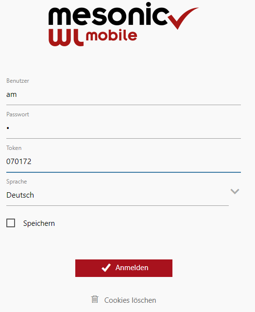
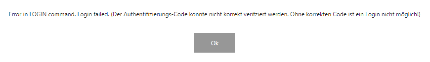

Nach erfolgreicher erstmaliger Authentifizierung wird zukünftig durch die Kombination der Anmeldedaten
ü WinLine-Benutzer
ü WinLine-Passwort
ü Code/Token aus der 2FA-App
die sichere Anmeldung an der WinLine mobile bzw. der WinLine-App ermöglicht.

Hinweis
Wurde bei der Anmeldung der Token zu spät, bzw. der falsche Token eingetragen, so gibt die WinLine mobile folgenden Hinweis:
